Dots
Two Dots / Dots & Co.
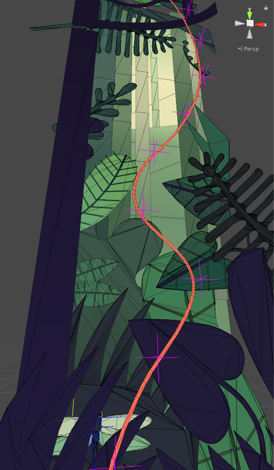
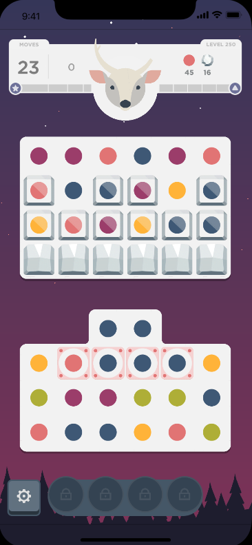
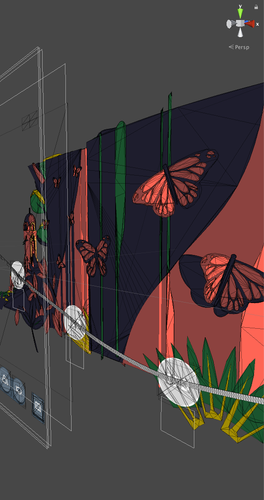
- Features and Bugs: Live-ops for millions of players
- Performance Optimization: Replaced sprite-based rendering with vectors to handle an ever growing world
- Third-party integration: Added and maintained analytics/purchasing/social/advertising plugins
- Tooling: In-Unity tools and editors for game designers and artists
"Wilds": Puzzle RPG (To Test Market)
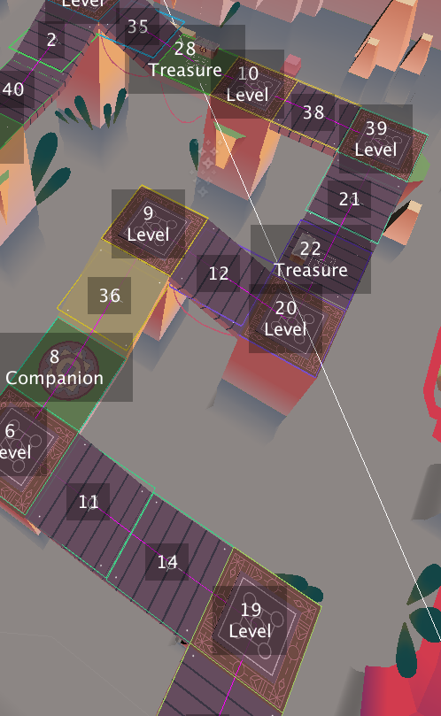

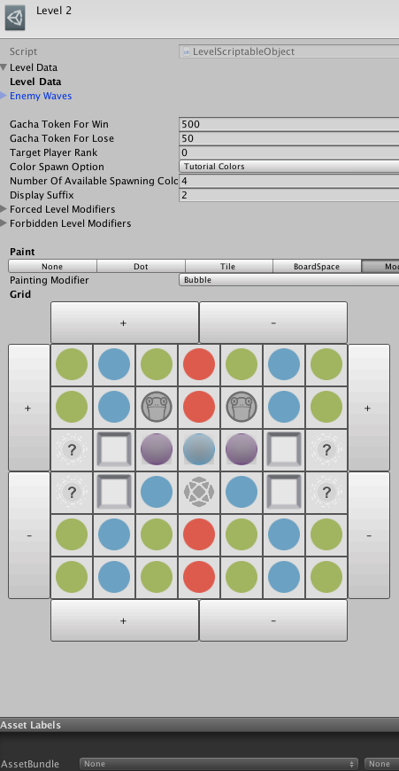
- Technical Lead from prototype (1 engineer) to test market(6 engineers)
- Heavy server-side architecting and integration
- Large stylised 3D world, targeting low-end mobile devices
"Blocks": Hyper-Arcade Puzzle Game (To Test Market)

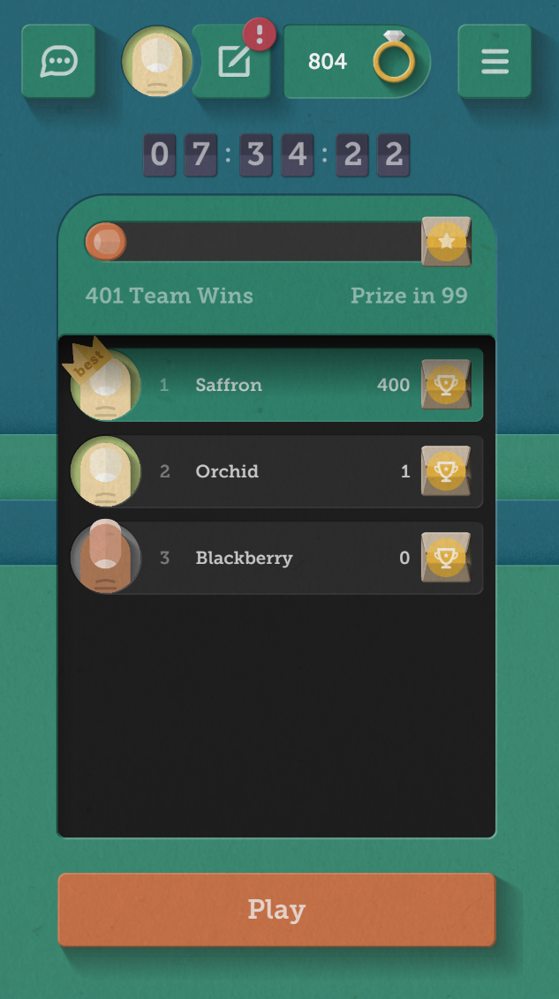

- Engineer on rapid development team of three (with game designer and artist)
- Built quickly to test market then live iteration ('early access'-ish)
- Made framework to easily swap out visual theming and gameplay changes for testing
Misc. Prototypes


- Lead prototyping engineer. Coordinating many small teams with short dev cycles
- Recycling 'hacky' code and filling in knowledge gaps on each team
- Specializing in shader/graphics work, optimization, architecture
Freelance
-
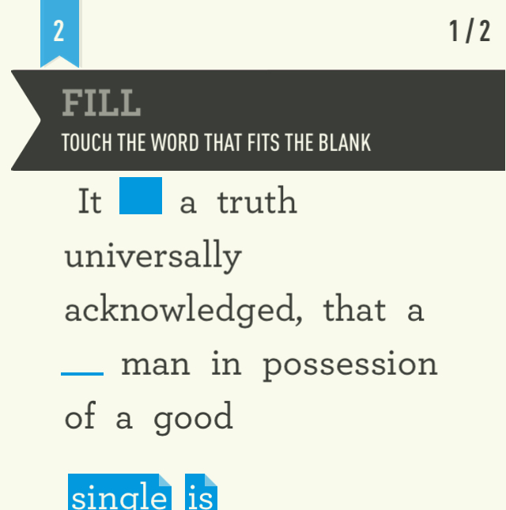
Dear Reader - Local No. 12
Apple Arcade prep work. Platform porting. Remote Saves. Swift -
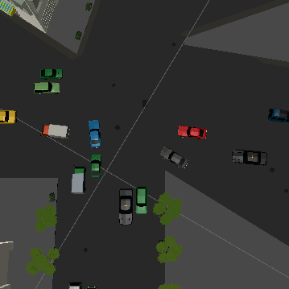
Home Free - Kevin Cancienne
Traffic simulation and interaction
Personal Work
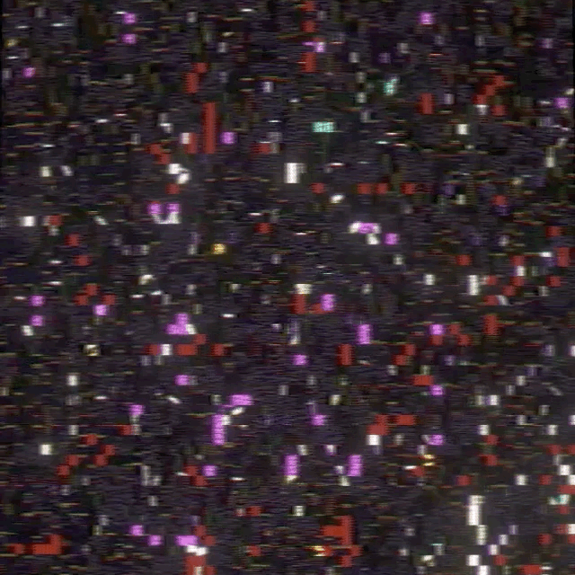
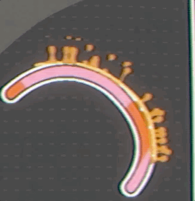
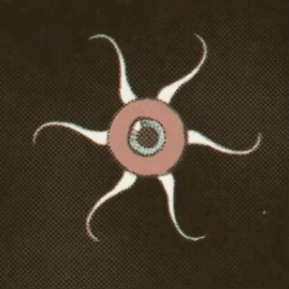


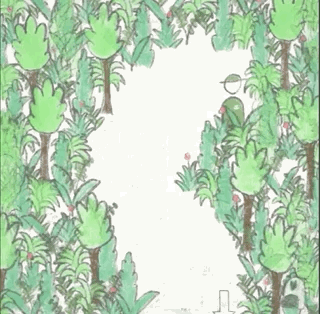
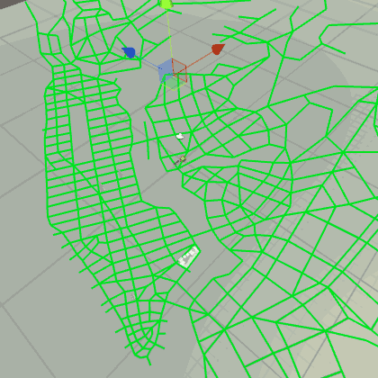
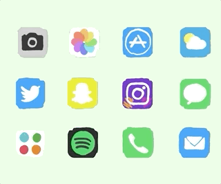
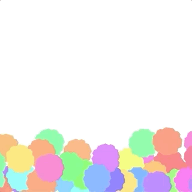
- Graphics/Shader Work
- Proc-gen
- Tooling
- Glitches
- GPU Experiments
- Dev Utilities